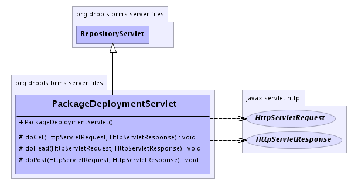

org.drools.brms.server.files
Class PackageDeploymentServlet
java.lang.Object
 javax.servlet.GenericServlet
javax.servlet.http.HttpServlet
org.drools.brms.server.files.RepositoryServlet
org.drools.brms.server.files.PackageDeploymentServlet
javax.servlet.GenericServlet
javax.servlet.http.HttpServlet
org.drools.brms.server.files.RepositoryServlet
org.drools.brms.server.files.PackageDeploymentServlet
- All Implemented Interfaces:
- java.io.Serializable, javax.servlet.Servlet, javax.servlet.ServletConfig
public class PackageDeploymentServlet
- extends RepositoryServlet
This servlet deals with providing packages in binary form.
- See Also:
- Serialized Form
-
- 
|
Method Summary |
protected void |
doGet(javax.servlet.http.HttpServletRequest req,
javax.servlet.http.HttpServletResponse response)
Get the binary package. |
protected void |
doHead(javax.servlet.http.HttpServletRequest request,
javax.servlet.http.HttpServletResponse response)
|
protected void |
doPost(javax.servlet.http.HttpServletRequest request,
javax.servlet.http.HttpServletResponse response)
This is used for importing legacy DRL. |
| Methods inherited from class javax.servlet.http.HttpServlet |
doDelete, doOptions, doPut, doTrace, getLastModified, service, service |
| Methods inherited from class javax.servlet.GenericServlet |
destroy, getInitParameter, getInitParameterNames, getServletConfig, getServletContext, getServletInfo, getServletName, init, init, log, log |
| Methods inherited from class java.lang.Object |
clone, equals, finalize, getClass, hashCode, notify, notifyAll, toString, wait, wait, wait |
PackageDeploymentServlet
public PackageDeploymentServlet()
doHead
protected void doHead(javax.servlet.http.HttpServletRequest request,
javax.servlet.http.HttpServletResponse response)
throws javax.servlet.ServletException,
java.io.IOException
- Overrides:
doHead in class javax.servlet.http.HttpServlet
- Throws:
javax.servlet.ServletException
java.io.IOException
doPost
protected void doPost(javax.servlet.http.HttpServletRequest request,
javax.servlet.http.HttpServletResponse response)
throws javax.servlet.ServletException,
java.io.IOException
- This is used for importing legacy DRL.
- Overrides:
doPost in class javax.servlet.http.HttpServlet
- Throws:
javax.servlet.ServletException
java.io.IOException
doGet
protected void doGet(javax.servlet.http.HttpServletRequest req,
javax.servlet.http.HttpServletResponse response)
throws javax.servlet.ServletException,
java.io.IOException
- Get the binary package.
This will get the compiled package stuff from either the latest package,
or a snapshot.
The end of the URI is of the form:
//( | LATEST)
if you pass in "LATEST" it will get the latest (not a snapshot) if it exists.
Normally that will only be used when downloading on demand, otherwise you should ONLY
use a snapshot as they are always "up to date".
- Overrides:
doGet in class javax.servlet.http.HttpServlet
- Throws:
javax.servlet.ServletException
java.io.IOException